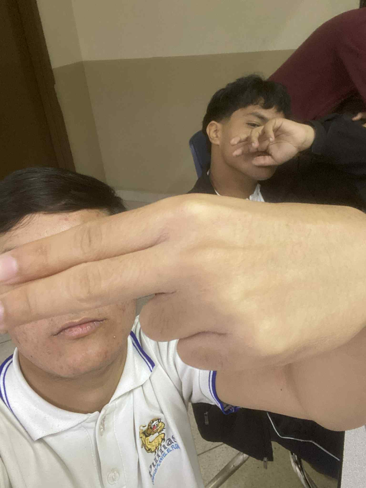
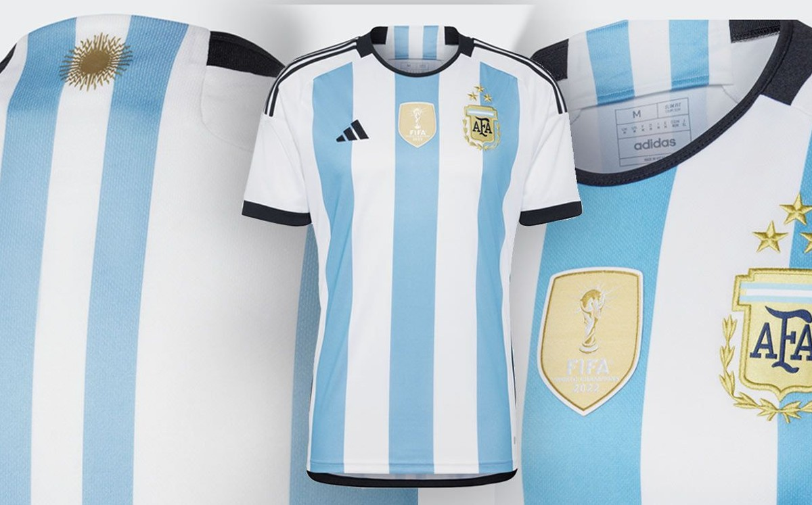
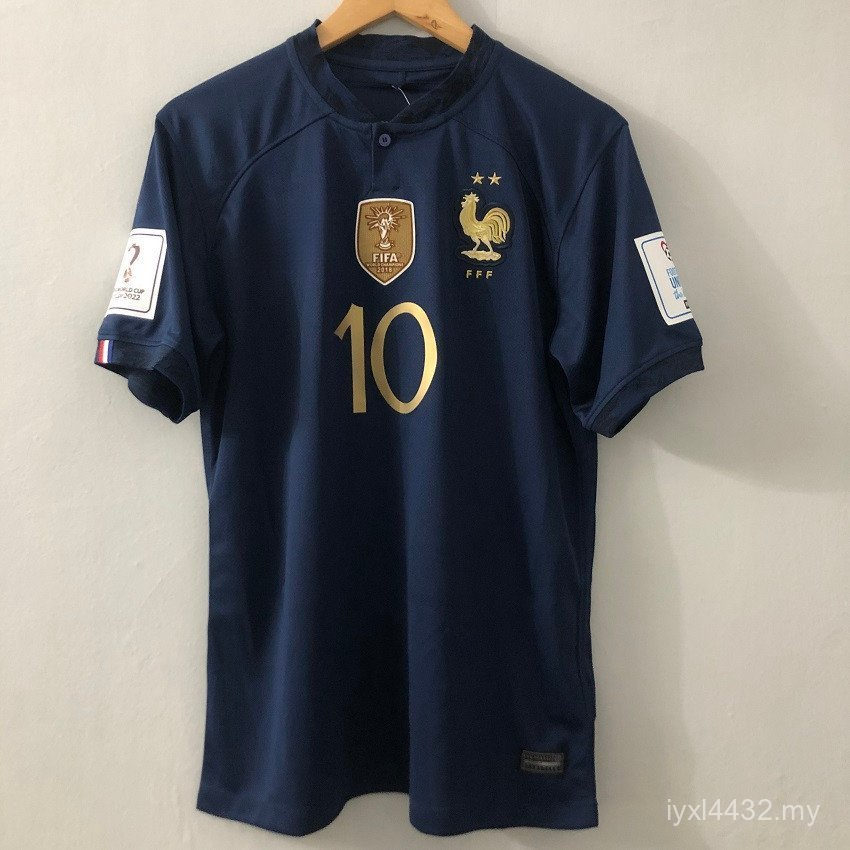
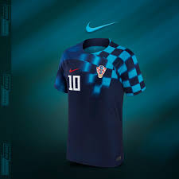
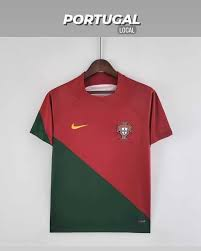
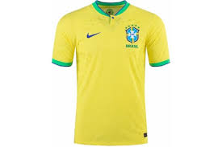
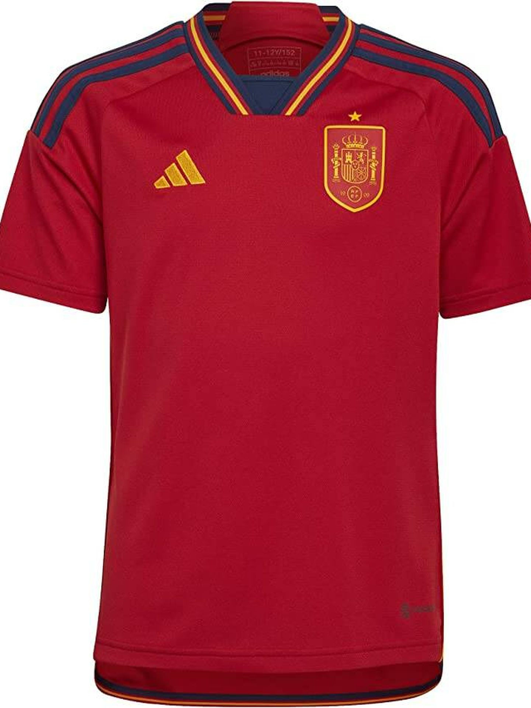
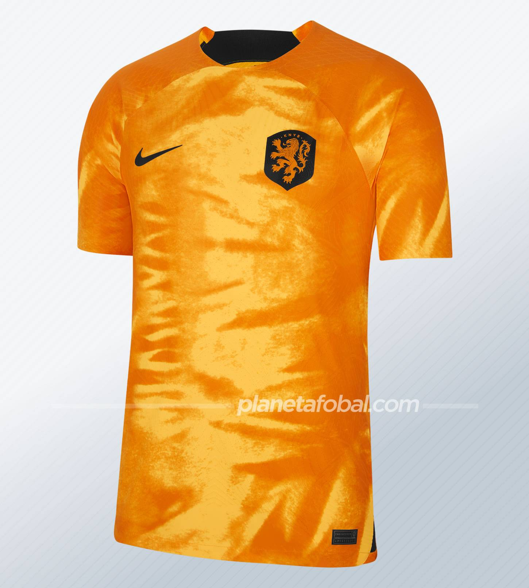
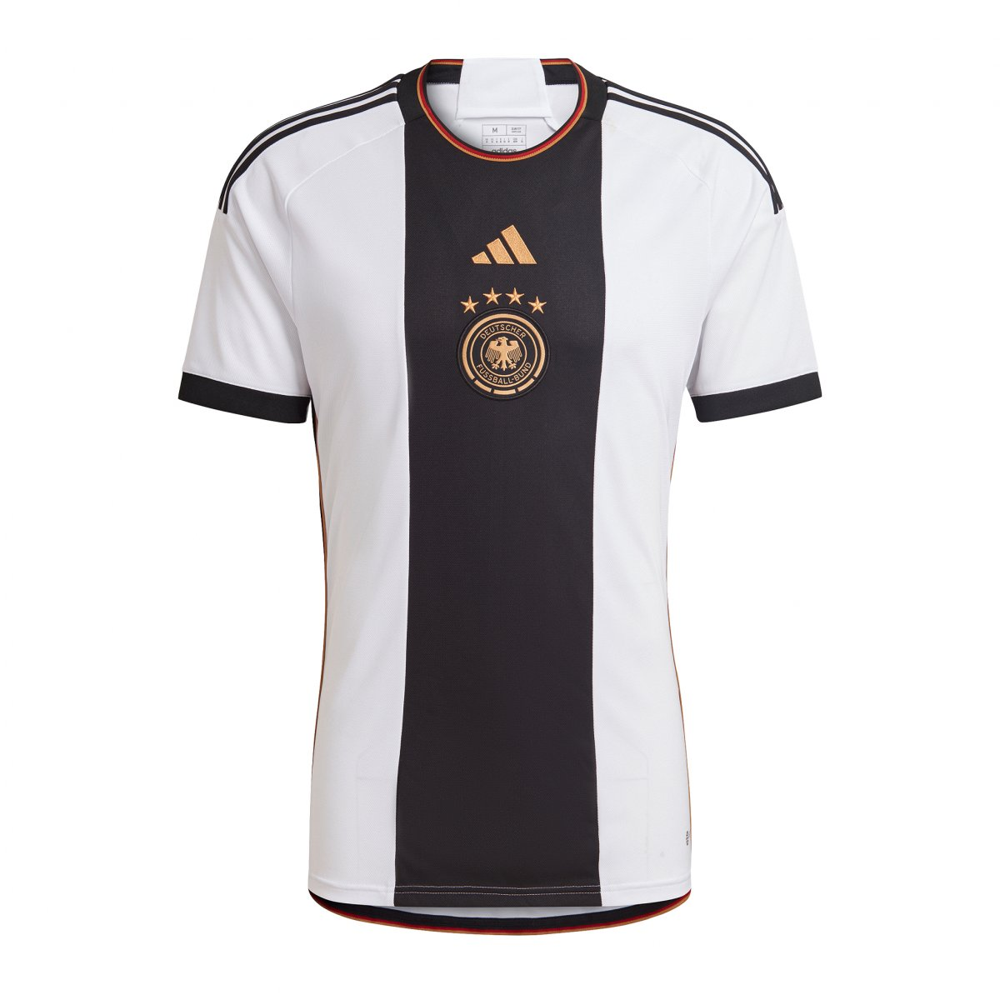
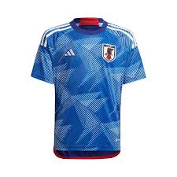

Juan y cesar
la vida de un futbolista siempre es llena de diciplina pereseverancia y emociones por viivir desde niño protejemos 2 cosas nuestra sleccion y el quipo que elij8imos para toda la vida solo los amantes de este hermoso deporte sabemos la emocion que es por ser afisionado y el en eso el mundial es lo mas grande de este hermoso deporte te unes a los jugadores por eso somos la mejor opcion cuando hablamos de unuirte a los jugadores con playeras de lo mejor
Argentina

atual campeona del mundo .
Francia

la 2 finalista del mundo consecutiva.
Croacia HLD

la seleccion revelante del siglo .
Portugal

una campeona eurocopa .
Brasil

la mas grande del futbol.
Mexico

la 3 veces sedista del mundial .
España

la actual campeona de la eurocopa .
Holanda

la seleccion que jamas defreauda.
Alemania

la 4 veces campeona del mundo .
Japon

una de las mejores revelaciones del siglos.